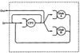
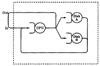
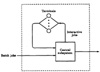
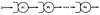
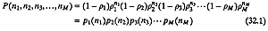
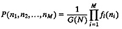
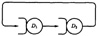
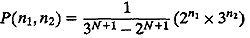
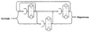

| Previous | Table of Contents | Next |
A problem well stated is a problem half solved.
—Charles F. Kettering
All the systems analyzed so far had only one queue. There are a number of systems that consist of several queues. A job may receive service at one or more queues before exiting from the system. Such systems are modeled by queueing networks. In general, a model in which jobs departing from one queue arrive at another queue (or possibly the same queue) is called a queueing network. This chapter presents several basic concepts about queueing networks. The techniques to solve the networks are described in Chapters 33 to 36.
Unlike single queues, there is no easy notation for specifying the type of queueing network. The simplest way to classify a queueing network is either open or closed. An open queueing network has external arrivals and departures, as shown in Figure 32.1. The jobs enter the system at “In” and exit at “Out.” The number of jobs in the system varies with time. In analyzing an open system, we assume that the throughput is known (to be equal to the arrival rate), and the goal is to characterize the distribution of number of jobs in the system. A closed queueing network has no external arrivals or departures. As shown in Figure 32.2, the jobs in the system keep circulating from one queue to the next. The total number of jobs in the system is constant. It is possible to view a closed system as a system where the Out is connected back to the In. The jobs exiting the system immediately reenter the system. The flow of jobs in the Out-to-In link defines the throughput of the closed system. In analyzing a closed system, we assume that the number of jobs is given, and we attempt to determine the throughput (or the job completion rate).

FIGURE 32.1 An open queueing network has external arrivals and departures.

FIGURE 32.2 A closed queuing network has no external arrivals and departures.
It is also possible to have mixed queueing networks that are open for some workloads and closed for others. Figure 32.3 shows an example of a mixed system with two classes of jobs. The system is closed for interactive jobs and is open for batch jobs. The term class refers to types of jobs. All jobs of a single class have the same service demands and transition probabilities. Within each class, the jobs are indistinguishable. The discussion here is limited to one class of jobs. Multiclass models are beyond the scope of the introductory treatment in this book.
The simplest queueing network is a series of M single-server queues with exponential service time and Poisson arrivals, as shown in Figure 32.4. The jobs leaving a queue immediately join the next queue. It can be shown that each individual queue in this series can be analyzed independently of other queues. Each queue has an arrival as well as a departure rate of λ. If µi is the service rate for the ith server,

FIGURE 32.3 A mixed queueing network is open for some classes and closed for others.

FIGURE 32.4 A simple queueing network consisting of k M/M/1 queues in series.
Utilization of the ith server pi =λ/μi
Probability of ni jobs in the ith queue = (1 – pi)pini
The joint probability of queue lengths of M queues can be computed simply by multiplying individual probabilities; for example,

This queueing network is therefore a product form network. In general, the term applies to any queueing network in which the expression for the equilibrium probability has the following form:

When fi(ni) is some function of the number of jobs at the ith facility, G(N) is a normalizing constant and is a function of the total number of jobs in the system.

FIGURE 32.5 Closed network of two queues.
Example 32.1 Consider a closed system with two queues and N jobs circulating among the queues, as shown in Figure 32.5. Both servers have an exponentially distributed service time. The mean service times are 2 and 3, respectively.
Using the method discussed later in Chapter 35, the probability of having n1 jobs in the first queue and n2 = N – n1 jobs in the second queue can be shown to be

In this case, the normalizing constant G(N) is 3N+1 – 2N+1. The state probabilities are products of functions of the number of jobs in the queues. Thus, this is a product form network.
Product form networks are easier to analyze than nonproduct form networks. The set of networks that have a product form solution is continuously being extended by the researchers. First among these was Jackson (1963), who showed that the above method of computing joint probability is valid for any arbitrary open network of m-server queues with exponentially distributed service times (see Figure 32.6). In particular, if all queues are single-server queues, the queue length distribution is given by Equation (32.1). However, it is not correct to assume that each queue becomes an independent M/M/1 queue with a Poisson arrival process. In general, the internal flow in such networks is not Poisson. Particularly, if there is any feedback in the network, so that jobs can return to previously visited service centers, the internal flows are not Poisson. It is surprising that even though the flows are not Poisson, the queues are separable and can be analyzed as if they were independent M/M/m queues.

FIGURE 32.6 General open network of queues.
Jackson’s results were later extended to closed networks by Gordon and Newell (1967). They showed that any arbitrary closed networks of m-server queues with exponentially distributed service times also have a product form solution.
| Previous | Table of Contents | Next |
){kind=link}
){kind=link}
){kind=link}
){kind=link}
){kind=link}
){kind=link}
){kind=link}
){kind=link}
){kind=link}
){kind=link}
){kind=link}
){kind=link}